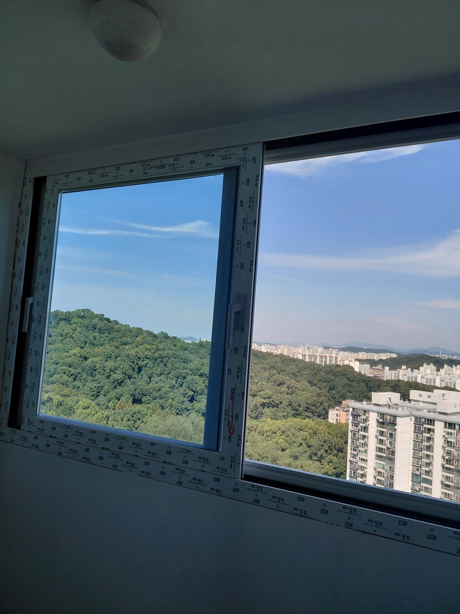

창호·샷시
외풍과 소음, 불편한 개폐.
지금의 창을 살피고 알맞게 바꿉니다.
창 하나부터 공간의 완성까지.
우리 집에 맞는 시공, 호성건축과 시작하세요.
현장 사진이 있다면 더 자세한 상담이 가능해요.

작은 부속부터 전체 프레임까지,
보이지 않는 곳까지 꼼꼼하게.
주거 공간부터 상가까지,
용도와 현장 조건에 맞춰 상담합니다.
외풍과 소음, 불편한 개폐.
지금의 창을 살피고 알맞게 바꿉니다.
매일 오가는 출입구를 더 견고하게.
설치 환경에 맞는 철문을 상담합니다.
기초 프레임부터 마지막 마감까지.
공간에 필요한 구조를 완성합니다.
상담부터 최종 점검까지
진행 순서를 미리 확인하세요.
필요한 공사와 지역을 알려주세요. 현장 사진도 함께 준비하면 좋아요.
방문 일정을 협의하고 구조와 치수, 기존 상태를 확인합니다.
자재와 공사 범위에 맞는 견적을 확인하고 시공을 결정합니다.
설치와 마감 후 상태를 점검하고 관리 방법을 안내합니다.
사진으로 시공 범위를 상담할 수 있습니다. 정확한 금액은 크기, 자재, 철거 여부와 현장 상태를 확인한 후 안내합니다.
인천 계양구를 기반으로 수도권 현장을 상담합니다. 지역과 공사 내용을 알려주시면 방문 가능 여부와 일정을 안내합니다.
시공할 위치의 전체 사진과 불편한 부분의 가까운 사진, 대략적인 크기와 희망 일정을 준비해 주세요.
작성만으로 접수되지는 않습니다. 작성한 내용을 문자 앱에서 직접 보내거나 전화로 말씀해 주세요.